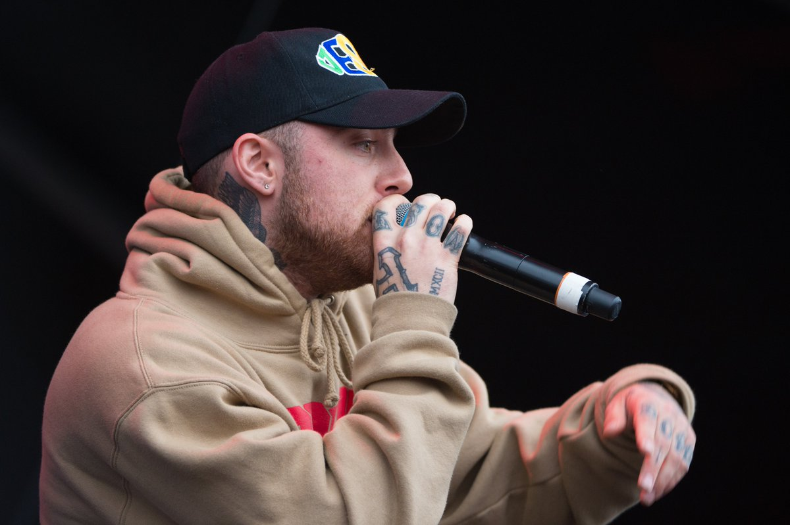
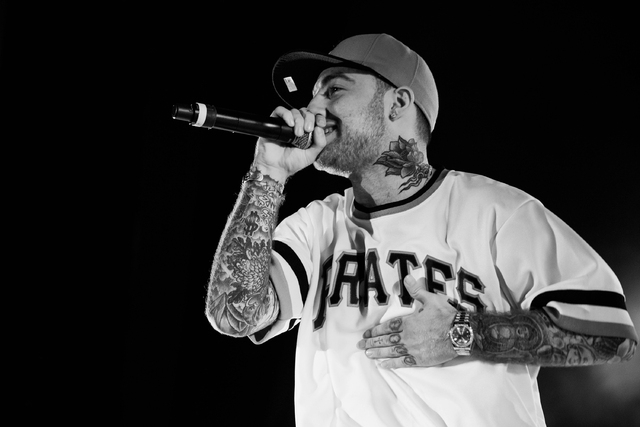
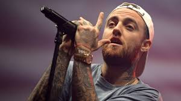
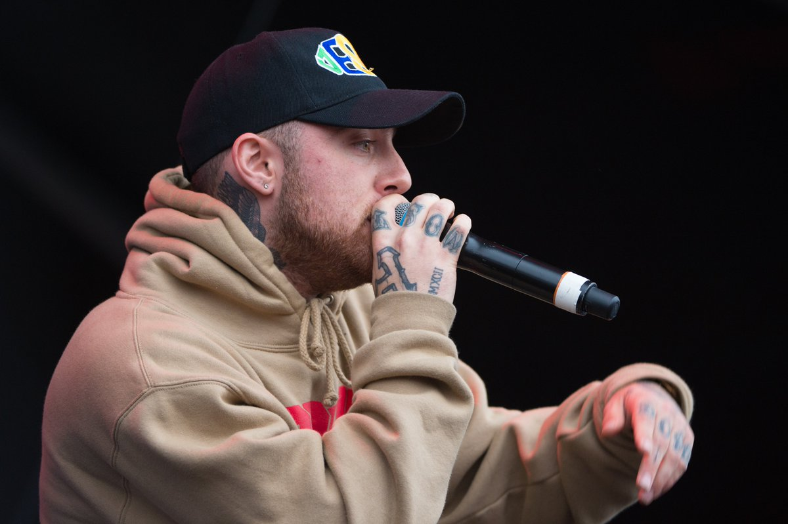
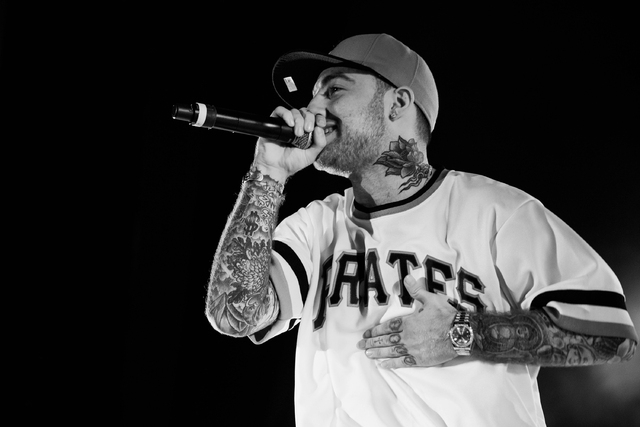
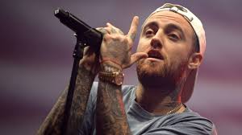

THE BEST OF MAC
Miller had a few tours himself, but mainly played at different festivals such as Lollapalooza, Bannaroo, and others. He shared his musical talent with others playing concerts with artist such as Wiz Khalifa, Anderson.Paak, Kendrick Lamar, ScHoolBoy Q, and many more amazing artist. With a grammy nomination for Best Rap Album , he left behind a legacy that lives on through all the musicans he impacted with his amazing talent. Tribute to Mac Miller
TOUR DATES
"Mac Miller: A Celebration of Life” October 31, 2018
Mac Miller: Hotel Café in Hollywood performance September 3, 2018
Mac Miller: The Divine Feminine Tour September 18-December 18, 2016
Mac Miller: The GO:OD AM Tour September 20 -December 20, 2015
"Under The Influence" tour Mac Miller and Wiz Khalifa July 26 - August 5 2012
Mac Miller: Blue Slide Tour September 22-December 9, 2011